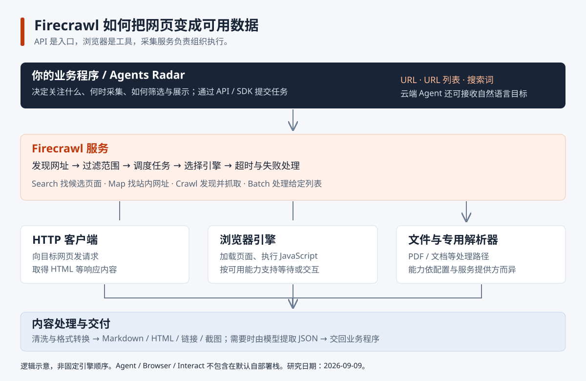

读一篇文章
核心 API你提供
返回结果示意
从“它是不是一个浏览器”开始
Firecrawl 是网页数据获取服务：以 API / SDK 接收网址、关键词和任务，通过 HTTP 请求、浏览器渲染、队列调度与内容转换，交付 Markdown、HTML 或 JSON。
支持搜索、单页与批量抓取、爬站，以及云端交互与 Agent。适用于新闻补全文、知识库和业务字段提取，可扩展持续更新、证据校验与质量监控。
01 / 输入 → 处理 → 输出
你提供
返回结果示意
02 / 数据到底从哪里来
你调用 Firecrawl API，不代表 Firecrawl 调用了目标网站的官方 API。浏览器加载页面时，也可能由网页自己的脚本请求内部接口。
网络请求、浏览器执行脚本、链接发现、HTML 转 Markdown、队列与失败处理，主要由程序完成。浏览器读取通常基于页面结构和文字，不是截图识字。
按字段提取 JSON、归纳摘要，以及 Agent 的任务规划等可使用模型。字段符合结构不代表事实一定正确；缺失信息应保留未知。

03 / 与我们研究过的项目对照
| 工作 | Agents Radar 已有实现 | Firecrawl 的接入价值 |
|---|---|---|
| 平台信息 | GitHub、HN 等专用 API 适配 | 优先保留已有接口；正文不足时再补充 |
| 官网文章 | 获取 HTML 并规整文本；Anthropic 最多 1500 字符 | 尝试更完整的正文、结构和动态内容获取 |
| OpenAI 官网 | Sitemap 元数据模式，从网址推导标题 | 尝试补充正文；成功率需要真实验证 |
| 新闻加工 | 规则过滤、取样、模型摘要、比较与翻译 | 可增加字段提取；业务筛选继续由 Radar 组织 |
| 展示与通知 | Markdown、网页、RSS、消息渠道、MCP | 沿用已有交付流程 |
即使抓到了全文，如果后续仍截取开头 1500 字符，新增信息大部分也进不了模型。建议重点文章分段摘要，并保留来源与原文。
04 / 登录网页与被访问平台
你电脑上的登录状态不会自动出现在 Firecrawl 服务器上。还要分别判断：登录凭证是否有效、采集引擎能否加载内容，以及目标平台是否允许这种自动化访问。
网站支持时，可以携带 Cookie 或认证请求头；云端 Interact 也能登录并用 profile 保存、复用浏览器状态。会话失效、短信、扫码或二次验证仍可能需要用户处理。
Cookie 代表账号会话，其权限可能大于“只读收藏”。使用云端浏览器会把相关凭证和页面带入云端执行环境。
官方会话与 profile 说明 ↗可能。 请求可以被拒绝、限流或要求验证，登录账号也可能被锁定、限制功能或停用。一次 HTTP 403 并不能直接证明账号被封。
X 官方明确说明：非 API 自动化，例如脚本操作 X 网站，可能导致账号永久停用。真实浏览器、本机运行或降低频率，都不能当作免封保证。
X 官方自动化规则 ↗| 路径 | 如何取得数据 | 平台与实现边界 |
|---|---|---|
| 浏览器导出 JSON | 已登录浏览器中的脚本记录收藏页后续 JSON 响应 | 只覆盖实际捕获内容；本机运行不豁免自动化规则 |
| Cookie + 内部接口 | 携带 auth_token / ct0 请求 X 内部 GraphQL，并分页 | 内部接口不是官方开放 API；可能失效或触发风控 |
| 官方 OAuth / API | 用户授权，程序用令牌调用官方收藏接口 | 优先评估；仍受权限、额度和规则约束，现有代码需修正实测 |
符合平台规则的官方授权取得收藏列表 → Siftly 保存推文和外部链接 → Firecrawl 读取允许采集的公开文章 → Siftly 分类与检索。不要把“技术上能登录”当作平台已允许自动采集。
所研究 Siftly 的收藏请求使用 /2/users/me/bookmarks；当前官方路径要求 /2/users/{id}/bookmarks，需代入实际用户 ID，并完成分页、令牌管理和真实验证。本项目未进行账号登录或私人收藏采集。
05 / 我们最终厘清的理解
浏览器只是可用执行引擎之一。Firecrawl 还组织网址发现、抓取任务、内容转换和结果交付。直接控制浏览器通常要自己安排页面操作；调用 Crawl 可以直接提交网站和抓取范围。
Scrape 接收 URL；Search 接收关键词；Map/Crawl 接收网站入口；Batch 接收 URL 列表；云端 Agent 可以接收自然语言目标。搜索发现并不保证完整覆盖互联网。
搜索、抓取和交互描述功能，API 描述调用方式，大规模描述批量与并发执行能力。实际规模受额度、资源、时间预算和目标网站影响，并不意味着无限制。
业务调度由你的程序负责：何时采集、关注什么、如何筛选和生成日报。一次抓取任务内部的页面发现、排队、并发和失败处理由 Firecrawl 承担。云产品另提供部分定时监控能力。
不是。默认自部署提供核心 API、Fetch/Playwright 等；模型功能需要配置提供方，Agent、Browser、Interact 等不包含在默认栈中。底层 Playwright 支持某种动作，也不代表该部署已通过 Firecrawl 暴露它。
网页清洗去掉无关结构，不能自动核实事实。maxAge 控制是否可复用缓存，不等于页面描述的事件是最新的；发布日期、事实和缺失字段仍需检查。
06 / 使用场景与可扩展方向
以下是基于库能力提出的应用方向，不是本项目已经实现的系统。已有 API 或 RSS 返回完整数据时，可以继续使用，不必重复抓取。
| 应用方向 | Firecrawl 负责什么 | 需要继续实现什么 |
|---|---|---|
| 新闻雷达 | 搜索与文章正文获取 | 事件去重、来源验证、时间判断、报告生成 |
| 持续知识库 | 爬站、内容转换、变化检测 | 增量入库、分块、删除同步、检索与引用 |
| 行业数据服务 | 页面获取与指定字段提取 | 单位校验、实体匹配、缺失值检查、证据保存 |
| 竞品变化监控 | 采集与前后内容比较 | 区分噪声与业务变化、重要性判断、通知去重 |
| 质量与成本管理 | 提供结果、元数据及任务状态 | 衡量成功率、完整度、字段准确率、延迟和有效记录成本 |
07 / 如何真正开始使用
在官方 Playground 选择抓取或搜索，比较结果与原文，观察正文、链接和字段有没有遗漏。
打开官方 Playground ↗项目提供 Python 标准库调用示例，支持单页、搜索及 JSON 提取。API Key 从环境变量读取，不在展示页输入或保存。
下载调用示例 ↓设置 FIRECRAWL_API_KEY 环境变量后： python firecrawl_example.py scrape https://example.com python firecrawl_example.py search "AI 编程工具" python firecrawl_example.py json https://example.com
本页未连接 Firecrawl。结果为人工编写的教学示例；匿名访问官方抓取接口曾返回 HTTP 403，尚未完成真实采集成功验证。